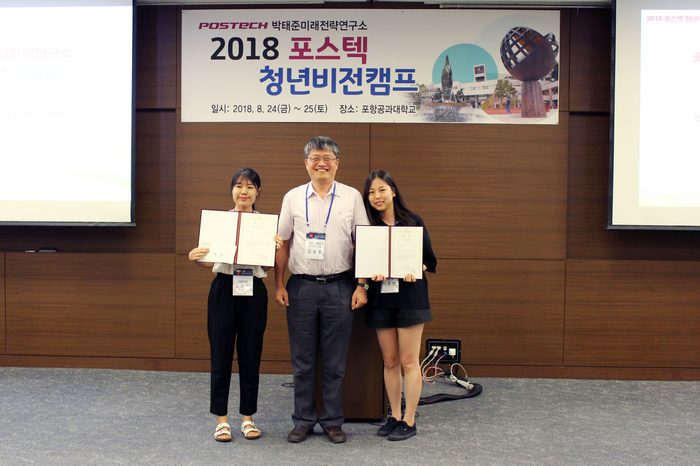

제 5회 째인 박태준미래전략연구소 대학생 및 대학원생 공모전
주제 ‘한국 사회의 갈등을 해소하기 위한 방안’
(세대 갈등, 계층 갈등, 가치관 갈등, 이념 갈등. 젠던 갈등)
대 상
「젠더 갈등의 정점에 있는 이 시대, 남녀의 대화는 가능할까」
- 이수현, 백승연(서울여자대학교)
Q. 어떤 계기로 공모전에 응모하게 되었나요?
미디어와 젠더 간의 관계를 다룬 수업을 함께 들은 것이 계기였습니다. 수업을 들으며 일상 속에서 마주하는 젠더갈등이 생각보다 큼을 몸소 체감했습니다. 그래서 저희 둘은 현재 한국사회에서 가장 큰 갈등이 무엇일지를 스스로 질문했을 때, 당장 남성과 여성 간 대화가 통하지 않고 관계를 단절하는 현상을 보고 젠더갈등이 아닐까 하는 확신이 들었습니다. 남녀 간 일상 속 대화단절, 그리고 미디어가 젠더갈등을 다루는 방식 등 현상이나 텍스트 자체의 분석에서 나아가 좀 더 거시적인 측면에서 문제를 다루어 보고 싶었습니다. 그래서 ‘현 시대에 남성과 여성의 대화는 가능할까?’라는 질문을 가지고, 젠더갈등을 해소할 수 있는 방안에 대해 연구하고 토론해 보고 싶다는 생각 하에 젠더갈등을 주제로 공모전에 응모했습니다.
Q. 에세이를 작성하면서 가장 중요하게 생각했던 점은 무엇이었나요?
갈등을 완벽하게 해결하기란 애초에 불가능하기에, 현 상황에서 모두가 할 수 있는 노력이 무엇이 있을지를 가장 많이 고민했습니다. 한 사람 한 사람이 생각하고 행동하는 것으로부터 사회 전체에 긍정적인 영향을 미칠 수 있다고 믿기 때문입니다. 갈등 해소의 실마리는 일방향이 아닌 쌍방향적 노력을 기울이는 것에 있다고 생각해서, 젠더갈등에 관해서도 남성과 여성의 상황을 모두 분석하고 최선의 접점을 찾아내 담아내기 위해 노력했습니다.
Q. 출품작을 준비하는데 가장 힘들었던 부분은 무엇인가요?
젠더갈등의 해소를 위해 남녀 간 접점을 찾는 과정에서 한계를 느꼈던 경험이 있습니다. 남성들이 페미니즘에 대해 어떻게 생각하기에 반감을 갖는지 사실 깊이 생각해본 적이 없었기 때문이기도 합니다. 그래서 남성들과의 인터뷰를 추가해 좀 더 당사자의 입장에서 이야기를 들어보려는 시도를 했습니다. 그리고 인식론적 접근의 측면에서도 저희가 놓치고 있는 부분이 분명 있을 것이라고 생각했습니다. 이 부분에 대해서는 관련 분야를 연구하시는 저희 학교 교수님들께 상담을 요청했고, 보고서와 토론을 준비하는 데 큰 도움을 받을 수 있었습니다.
Q. 공모전 준비 시 유의사항이나 도움이 될 만한 조언 부탁해요!
형식적인 측면에서는 ‘에세이’라는 점에 주목해 논문처럼 딱딱한 글이 되지 않도록 노력했던 것 같습니다. 글씨체, 줄 간격 등 제출 규격을 꼼꼼히 확인하고 정확히 지키는 것도 중요한 것 같습니다. 이미 제출한 후에 규격 하나를 못 지킨 걸 발견해서 수정해 다시 보냈던 기억이 납니다. 당연한 말일지도 모르지만, 내용적인 측면에서는 현상을 분석하고 해소 방안을 생각할 때 ‘정답은 없다’는 걸 계속해서 상기하려고 노력했습니다. 그저 각자가 있는 위치에서, 때로는 한 걸음 물러나 보기도 하면서 최선을 다해 분석하고 생각하면 좋은 결과물이 나오는 것 같습니다.
Q. 공모전이 에세이에서만 끝나지 않고 캠프에서 발표 및 토론의 시간을 갖은 후 대상과 최우수상이 선정되는데요. 이점에 대해 어떻게 생각하시나요?
사실 발표하는 순간까지도 걱정했습니다. 반박하기 힘들 정도로 비판받는 건 아닌지 걱정도 됐고, 한편으로는 다른 사람들은 어떻게 생각할지 호기심이 생기기도 했습니다. 이 모든 것들이 발표 후 토론의 시간을 가지면서 해소됐습니다. 다양한 발표를 듣고, 궁금한 점을 묻고 답하고, 때로는 날카로운 비판이 오가고, 서로에게 조언도 해주고. 여러모로 ‘건강한’ 시간이었습니다. 에세이를 제출하고 곧바로 대상, 최우수상까지 선정하는 방식이었다면 다른 팀들의 발표 내용을 제대로 접하지 못했을 것이고, 다양한 주제들에 대해 깊이 생각해볼 수도 없었을 것 같습니다.
Q. 꼭 하고 싶은 말이나 수상소감 한마디 부탁해요!
대상 수상 후, 심사위원 중 한 분께 직접 메일을 드려 에세이와 발표에 대한 피드백을 받았습니다. 다양한 측면에서 칭찬과 충고 모두를 해 주셨는데, 가장 기억에 남는 코멘트 중 하나는 “청년다운 진취성을 보여준 점이 좋았다”는 것입니다. ‘20대 대학생’이라는 신분으로 치열하게 고민하고 분석하고 사유해볼 수 있었던 소중한 기회였습니다. 그 점을 인정해주시고 대상이라는 큰 상까지 주셔서 정말 감사드립니다. 박태준미래전략연구소에서의 소중한 기억을 잊지 않겠습니다. 앞으로도 다양한 분야에서 진취성을 보이며 열심히 살겠습니다.
